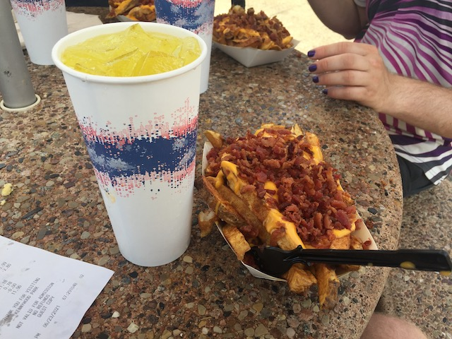

Kennywood is not your typical amusement park that contains nothing but humongous roller coasters that peirce the sky, concrete, and trash cans. Kennywood is a traditional park in the sense that it opened up in the late 1800s, and the park to this very day continues to thrill many different people. Now that's a talented park right there. Kennywood just has a perfect balance to the park in the sense that they not only do everything, but they do everything really really really well. This park had fantastic roller coasters, amazing airtime, cool and unique flat rides, fantastic food, a great setting, and an atmosphere that can't be replicated at any other park. They have a nice balance of both really old school wooden coasters and crazy modern twisted steel coasters. While most parks have to make a choice to either have amazing top ten roller coasters, or a nice homey atmosphere that everyone can enjoy, Kennywood manages to get the best of both worlds, pleasing everyone for over a century, and I'm pretty sure that Kennywood has another century of greatness ahead of them.
Here are the reviews of all the Flat Rides at Kennywood. Now at Kennywood, their flat ride collection is very good. Not only do they have many cool modern day flat rides, but they also have some really cool, really rare retro flat rides that you have to check out. This is not an ordinary flat ride collection that I usually look for, such as the Canada's Wonderland flat ride collection. This one contains a lot of really cool and unique rides that I don't even think you can ride at any other park. Ok, so let's get down to buisness. First flat ride to review, Kangaroo. Now the Kangaroo is not an ordinary flat ride. This is one of those rare retro flat rides that are hard to find. In fact, I think Kennywood may just be the only park in the world with a Kangaroo. So, yeah. Ride this ride just for the rareness factor. But aside from the rareness factor, it's a really f*cking cool flat ride. You get in this small weird car. The cars go in a circle around the track. But here's the cool part of the ride. In the middle of the circle, they have a ramp for the cars to go up. And not only do you fly up the ramp, you fly OFF the ramp. Yep. This is like one of those cartoon flat rides you see on TV where a ride goes off a ramp and flying in the air before landing back on the track. Except this is real and safe. So yeah, it's actually really fun, and it even provides you with some airtime. Flying off that ramp is a really fun experience. So yeah. This is the flat ride that you HAVE to ride at Kennywood. It's really fun and really rare. Don't miss Kangaroo. Next up on our flat ride list is Areo 360. This is the Zamperla Model of the Swinging Inverter Ship. And as I said before, the Zamperla Models are the best ones you could possibly find. And Kennywood still manages to add the Kennywood charm to even this basic flat ride. You know of the Kennywood Arrows right? Well this ride is actually themed to those Kennywood Arrows which actually not only makes it blend right in with the rest of the park, it also makes it look really freaking cool. And not hurting like hell is always an added plus. However, this is just scraping the surface for flat rides at Kennywood. They also have a Zamperla frisbee, a full sized Screamin Swing, a turtle ride, which while I'm not sure what it does, I do know that it's a very rare flat ride that I wish I had ridden, a Disko, an enterprise, a bayern curve, a whip, a music express, a paratrooper, a pirate ship, some chairswings, a carousel, some bumper cars, a car ride, and a rockin tug.
RIDE THIS RIDE!!!!! Kangaroo is really fun and really rare. Here you can see the ramp that it will jump off of!!! =)
Dark Rides
Kennywood has a very interesting Dark Ride Collection. Mostly because Kennywood's dark rides are not your typical dark rides. Well, at least not the one I did. The most prominent dark ride I did was the Old Mill. This is....something that ordinary, would not be anything special. But....it's been there since the early 1900s. So it's cool just for the antique factor alone. I know at one point, they tried modernizing it by theming it to Garfield. Yeah. That didn't work. Glad they scrapped that. And then there's Noah's Ark. Now I know what some of you may be thinking. "NOAH'S ARK IS NOT A DARK RIDE!!! IT'S A WALK THROUGH!!! YOU DON'T RIDE IN ANYTHING!!! IT'S A WALK THROUGH!!!" Well, I count walk through attractions as dark rides. And there's nothing you can do about that. Anyways, onto Noah's Ark. First you take an elevator up to the top, and then it just turns into a crazy fun house. There's a bouncy floor, and you see lots of cool stuff. Then after that, you actually go on the Ark, where the whole thing shakes and it's hard to walk. The whole thing is just an arkload of fun. Yeah. I will admit it wasn't quite as fun the second time around. But that's just because I became spoiled by all the amazing fun houses they have in Europe. But seriously, it's a lot of fun.
Definately check this out if you haven't done the European Fun Houses.
Water Rides
I never rode any of the water rides at Kennywood. But from what I saw, none of what they have is special. All I saw was a log flume, a shoot the chutes, and a river rapids ride. These are fairly common flat rides and I don't think missing these was a big deal. But hey. This is Kennywood. The place that masters everything. So there could very well be some hidden charm in these ordinary water rides that I just can't see right now.
Dining
Like everything at Kennywood, the dining options that they serve at Kennywood is above average. Now as you all know, the food that everyone talks about when talking about Kennywood is the Potato Patch Fries. And yep. That's where I ate. And I know I loved them the first time. And....they're still really good. But....not as ground-breaking as I initially thought. But hey. Still really good. Now granted, these arn't healthy since they are French Fries covered in cheese and bacon bits. But hey, it's not only totally delicous, but those are totally fresh potatoes, which alone, make beyond average french fries. But when you add cheese and bacon to it, F*ck your health. Eat these. They are famous and they are delicous.

Eat here. It is fresh and delicous.
Theming and Other Attractions
Here are the reviews of all the other stuff at Kennywood. For theming, they have little bits of theming scattered around the park. But no, there's no lands like in a Disney or Universal Park. But still, they don't just plop their rides down. They make sure they look good. And there is some mild theming such as the ailean theming in the Disko and Areo 360 being themed to the Kennywood Arrows. As for setting, I LOVE the Kennywood Setting. There are trees everywhere, and I just love that ravine that you drop into on Thunderbolt and Phantom's Revenge. Kennywood's setting is definetly without a doubt, FANTASTIC!!! As for other attractions, I can't think of too much. I'm sure Kennywood has some cool shows and hidden gems, but that's just stuff for me to figure out later.
In Conclusion
Kennywood is a FANTASTIC theme park. I love everything about this theme park. Every roller coaster here is fun and some are downright amazing. The flat ride collection has a ton of flat rides both consisting of great new flat rides, to fun super rare old flat rides. They have great walk throughs, great food, and a great setting. Everything is well rounded and exceeds the average by far. You will always be pleased at Kennywood, no matter what your taste is. This is one theme park that you have to make your way to. Kennywood will be happy to have you and you will be happy to have Kennywood.
Enthusiast FAQs.
*Are there kiddy coaster restrictions? - I think so, but not entirely sure. I've heard mixed reports from other people about Lil Phantom. Some got denied, but others got the credit with no problem.
Tips
*Spend a whole day here to check everything out.
*Be careful with Exterminator. That ride gets a NASTY line.